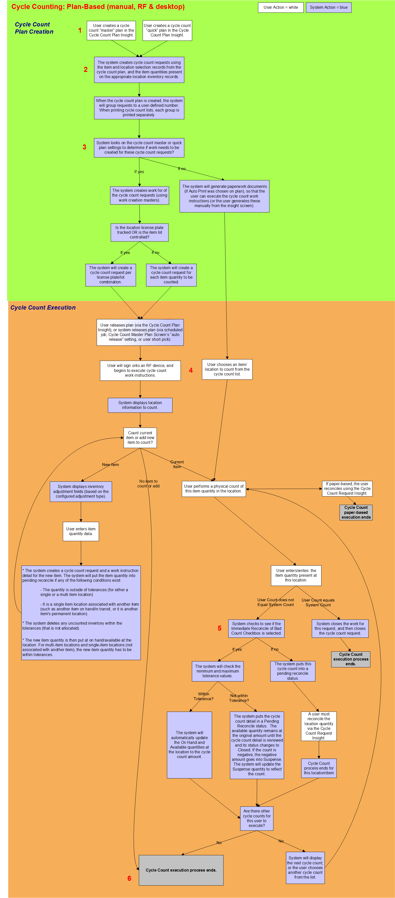
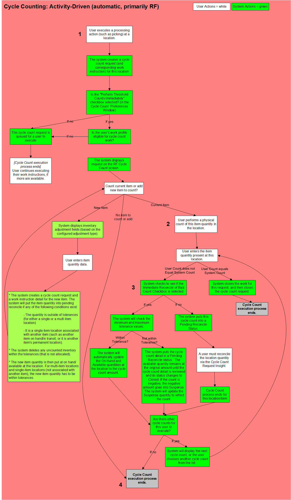
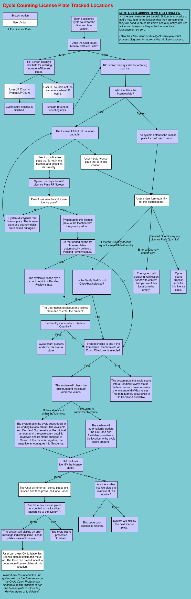

** Process Flows **
- Cycle Count Creation Discussion
- Non-Plan Based (Activity Driven)
- Counting Locations With License Plates
The following outlines exactly how in transit quantities, permanent locations, and lots/license plates are handled during cycle count creation.
This process diagram illustrates one of the two methods of cycle counting: plan-based (both paper-based and with work). Each step in this process is further explained in the diagram and descriptions below.

When you are ready to perform cycle counts on a location or group of locations, you will need to create a cycle count plan. There are two types of plans: master plans and quick plans. Master plans are driven off of the settings defined on the appropriate Cycle Count Master Window configuration record. When creating a master plan, a few key decisions will have to be made: which master record to have the system use for creating requests, how many requests (counts) to include per group, and if they want the system to automatically print a cycle count list for this plan. A quick plan is generated manually by the user in the Cycle Count Plan Insight screen.
The user will create either type of plan in the Cycle Count Plan Insight screen.
When a plan is created, the system will also create cycle count requests based on the settings in the plan. The system will either create the requests with corresponding work units, or create the requests and generate a cycle count list which displays each request. This decision is based on whether or not you decided to create work for this cycle count plan. If so, the system will create a work unit that will contain all of the cycle count requests for this plan. Workers then could use their RF devices or the Work Insight Screen to perform these counts. However, if you choose not to create work, the cycle count requests will only appear on a cycle count list. Workers then would have to execute this plan from this paperwork, and then use the Cycle Count Request Insight screen to confirm or reconcile the count.
Note that if there is already a pending request (in an "Open" status) for an item/location/license plate/lot combination, then the system will not create a new cycle count request for anything at that location. For example, suppose you create a cycle count plan with a large number of requests. Soon after, some workers execute picks on locations that should trigger the creation of activity-driven requests; however, none of the workers will see cycle count requests when doing that work. This is because your original cycle count plan already created a pending request for that location. Therefore, a new request was not created.
Also, the system can arrange the cycle count requests into groups. When a plan is created, the user can indicate the number of counts that they want per group. The system then would use this value when deciding which requests appear on each cycle count list. This is one method that makes work manageable as you can define work's "Create Work Unit" at the group level.
After the system creates a cycle count request, it then needs to decide whether or not it should create work for this request. This setting is indicated on the cycle count master record. If you decide that work should be created, the system will create a work unit using the appropriate work creation master. If you decide that work should not be created, the system will generate paperwork documents (if "Auto Print" was chosen on plan), so that the user can execute the cycle count work instructions.
The cycle count plan will then need to be released, so user(s) can execute the cycle count work instructions generated from the plan. The plan can be manually released by the user (via the Cycle Count Plan Insight screen), or the system can automatically release the plan (via a scheduled job, the Cycle Count Master Plan Window’s “auto release” setting, or because of a user short pick). Keep in mind that both master and quick plans are released in the same manner. Also note that a cycle count system value determines whether or not a plan is released when running via a scheduled job. Do not choose to auto-release a plan unless you want the system to begin processing the cycle count requests immediately.
The user will now initiate the cycle count using either of these methods:
If work was not created for the cycle count requests:
If work was created for the cycle count requests:
The user then will go to the specified location and physically count the item quantity that resides there:
Adding item(s) during cycle counts:
After the user enters the cycle count, the system needs to perform some processing steps to process the cycle count. The system checks to see if the Immediate Reconcile of Bad Count Checkbox is selected:
The cycle count process ends when:
This process diagram illustrates one of two different methods of cycle counting: non-plan based (also known as "activity-driven").

Non-plan based (activity-driven) cycle counting is the concept of triggering the generation of a cycle count request after a warehouse activity (like a pick). The triggering of these requests is tied to the location being processed (e.g. a pick being done to a location). After the transaction is executed, the location will be reviewed to see if a cycle count request should be generated. These requests are created one at a time and "on the fly," versus the plan-based method where a whole bunch of requests can be created at once. This type of cycle counting is typically done on an RF device.
The Cycle Count Preference Window has a setting that controls whether these activity-driven requests should be executed immediately or created as pending requests. If these requests are to be executed immediately, the system will display a cycle count screen on the RF device. The user then can execute the cycle count. However, if the system creates a pending request, then the request will be executed at another time either through RF or full-screen (depending on if the system flags are set up to create work for activity-driven cycle counts).
NOTE: If you are not executing work, this concept of immediate reconciliation does not apply; therefore, the system will create all records as pending requests (only if there is no open requests already out there for this item/location/license plate/lot).
A user will perform a processing action at a location on an RF device, such as picking or an item adjustment, and the system executes that action.
After the processing action has been performed, the system will decide if a cycle count needs to be performed at this location. This is done by checking the location's cycle count tolerance level, which is defined in the cycle count threshold record. If this tolerance level is met, the system will determine that a cycle count needs to be performed this location, and a request for this location/item quantity will be created. If this tolerance level is not met, the system will continue processing the next work instruction (if one exists for this work profile/user).
After the system creates a cycle count request, it then needs to decide whether or not it should create work for this request. This setting ("CC WORK UNIT") is defined on the Cycle Count System Values Window.
The user will now initiate the cycle count using either of these methods:
If work was created for the cycle count requests:
The user then will go to the specified location and physically count
the item quantity that resides there. On the RF
device, the system will display a cycle count work instruction,
depending on how the work was created. Note that cycle count work is treated
like any other type of work in the system. They would then perform a physical
count of the item in that location, and enter this count into the RF.
Adding item(s) during cycle counts:
After the user enters the cycle count, the system needs to perform some processing steps to process the cycle count. The system checks to see if the Immediate Reconcile of Bad Count Checkbox is selected.
The cycle count process ends when the user has executed the cycle count request created for the decremented location.
This process diagram illustrates the process of cycle counting locations that house product in license plates
